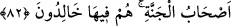

söylüyorlardı. Bir görüşe göre de, birkaç gün, atalarının puta taptıkları kırk günlük
süredir.
Ebû Mansûr şöyle demiştir: Yahûdîlerin iddiâ ettikleri; cehennemde kalacakları
birkaç gün, isyân ettikleri günlere hamledilir. Zira onlar azâbın, sâdece isyân edilen
vakit kadar olacağını zannediyorlar. Cehmiyye gibi, cehennemde ebedîliğin olmadığına
inanıyorlar. Onların bu sapıklığı kendilerini Allah’ın oğulları ve sevgilileri olarak
görmelerinden ileri geliyor. Çünkü bir baba oğluna veya sevgili sevgilisine ancak belli
bir mikdar cezâ verir, sonra vazgeçer. Tabîî ki bu aldatmacalar, onlardan sâdır olan boş
sözlerdir. Îmânın karşılığı, nasıl ebedî cennetse, küfrün karşılığı da ebedî cehennemdir.
Bir dîne inanan, onun ebedîliğine de inanır. Yahûdîler, bunu inkâr ettikleri için ebedî
cezâya müstehak olmuşlardır.
Âyetin: “Ey Muhammed onlara söyle!” bölümü, onları kınamak ve azarlamak için
gelmiştir.
İddiâ ettiklerinizin gerçekleşeceğine dâir Allah katından bir söz veya haber mi
aldınız? Çünkü dâvâsını güttüğünüz iddiâ ancak kuvvetli bir söz veya haber
mukabilinde olabilir. Bu yüzden “ahd” (
) yâni söz, kelimesi kullanılmıştır.
(
) kelimesindeki (fâ), harf-i fasîhiyedir, mahzûf bir şartın cevâbının başına
gelmiştir. Takdîri: Eğer Allah katından bir söz ve emân aldıysanız, bilin ki, Allah da bu
ahdine sâdık kalacaktır. Yâni o sözünü yerine getirecektir.
İmâm Ebû Mansûr, bu son iki kısım için iki takdîr yapmaktadır:
1. Acaba sizin yanınızda birkaç gün dışında azâb edilmeyeceğinize dâir, Allah katında
bir söz mü var? Eğer öyleyse Allah sözüne sâdık kalacaktır.
2. Sizin, Allah katında karşılığında cennet va’d olunan sâlih amelleriniz mi var? Eğer
öyleyse Allah, bunların karşılığını verme husûsundaki sözüne sâdık kalacaktır.
“Yoksa siz, Allah’a karşı (vukûunu) bilmediğiniz bir şey mi söylüyorsunuz?”
cümlesindeki “söylüyorsunuz” ifâdesinden maksad, “iftirâ mı ediyorsunuz” dur. Yâni
eğer sizin yanınızda Allah’ın bir ahdi varsa şunu bilin ki o ahdini bozmaz. Ama siz
yalan söyleyip inkâr ediyorsunuz.
Rivâyet olunur ki, yahûdîler cehennemde iddiâ ettikleri kadar kaldıktan sonra
zebânîler onlara şöyle der: “Ey Allah’ın düşmanları, muayyen vakit bitti, ebed başladı.”
Böylece, ebed azâbıyla gözleri açılır.
81. Hayır! Kim bir kötülük eder de kötülüğü kendisini çepeçevre kuşatırsa işte o